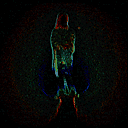

Dream of the Month
Dream of the Month
|
Sleep Talking
Each month, the Televisionary Oracle newsletter is proud to serve up the pipingly potent mojo of the unconscious mind, taken hot from readers' morning musings. And, as an inveterate dreamer who disdains less than nine hours of sleep (which takes considerably longer than nine hours to enact as he must continuously awaken to jot down his nocturnal submissions), Rob is a natural born leader of the sleep set. Accordingly, reader Todd Gunderson rouses mightily with this sample of his own sleeping sickness:
 Two nights ago I had a very strange dream. The images are fresh and vivid in my mind like it all really happened and I was way too sober at the time because I remember them so well. I was on a small boat in the middle of a large body of water and all around me were little creepy faces sticking out of the water and trying to get my attention. I was trying as hard as I could to not look at them. It got very frustrating and I remember laying down on my back and looking up at the moon thinking that I wish I'd wake up. One of them got onto my boat and I reached for my knee--this is where it gets disturbing: on the inside of my left knee there was this huge gaping hole. I could see white bone and a lot of pink gelatinous goop and blood. The crazy part is that there was a small brain in the hole and I tried to pull it out but it was attached to some sort of elastic-ish material and it kept slipping back in everytime I'd get it a little further out. The thing on the boat just stared at it almost as if it had no idea what was going on. So what does it mean?
--7odd
Have any insight into Todd's repellant night vision? Got a subconcious desire to share? Have an otherworldly flash of brilliance that leads from shut-eye to third-eye in 90 seconds flat? Write to us and share it with other literate diurnals.
Back to the Table of Contents.
Surf the Boulevards network
to other great alternative
content sites.
|